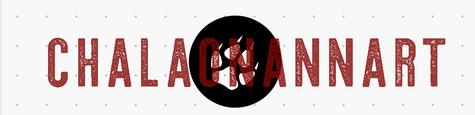
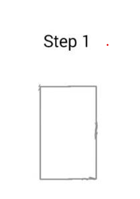
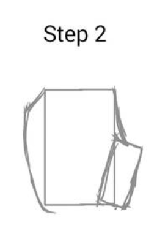
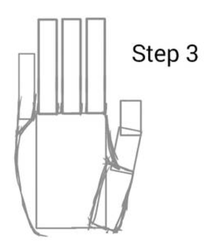
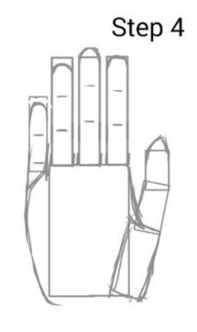
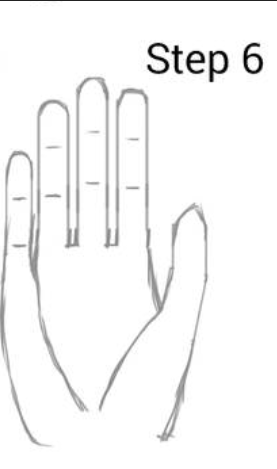

Selamat Datang Di

Belajar Menggambar Mudah Dan Asyik
Hand
-
sekarang kita beranjak ke pembuatan telapak tangan(bukan tangan yaa). langkah pertamanya adalah membuat kotak guna dasar awal dari bentuk telapak itu sendiri.
 -
jika sudah ada bengtuk dasarnya maka kita bisa memulai untuk membuat tempat seketsa untuk jari kelingking dan jempol.
 -
selanjutnya kita buat sketsa jari dengan bangun datar seperti persegi panjang dengan susunan seperti bentuk jari.
 -
kemudian ubah bentuk persegi tadi ke bentuk yang lebih mirip dengan jari, lalu hapus sketsa kotak tadi agar terlihat nyata, dan terakhir beri outline dan...... jadilah gambar telapak tangan.
 